Button
The act of a zone, its second act, a glyph on a tile and a dialog's close: one family in three sizes, one corner and one weight. Everything on this page is drawn by design/system/components/button.css through index.css, the same file a screen will load.
Anatomy
| Part | Class or element | What to change there |
|---|---|---|
| The act itself | .button | shape (one 12px corner), the label's type: 900, uppercase, --tracking-caps |
| Emphasis | .button--primary, --ghost, --icon, --close | the fill, the edge, the glow; the faint stripes and the band of light on the primary |
| Size | .button--s, --m, --l; --tap, --s-tap | height and sides; the 44px press an S carries without drawing it |
| Label | .button__label (only where it folds) | the words; under 600px --fold hides them for the eye and keeps them for a screen reader |
| Glyph | .button__icon, or an .icon in --icon | the mark before the label, 1.25em; the tile's glyph at --size-tile-icon |
| Price | .button__price with .icon--coin | the chip at the act's end on --priced: the coins in gold on a dark chip |
| Busy | [aria-busy="true"], .button__dots | Rolling with three dots and a light running through; set by the product's script, never by a class |
| Pin | .button__pin | a figure pinned to the corner (a count) |
Variants and sizes
Three axes. Each carries its rule, so the next screen picks by the rule instead of finding a reason again. Heights and widths below are read from the rendered buttons, not from the stylesheet.
- Emphasis = one act per zone. One primary in a zone, the act that spends or starts (D-226 row A2); a second act is a ghost; a glyph alone stands on a tile; the cross closes a layer.
- Size = the density of the container, never the act's importance. L 52 where the act is the zone (the commit, a dialog's act), M 40 in a bar or a panel, S 32 in a row, a card or a chip line. Below 44px the press area stays 44px.
- Width = the layout, not the button. A button never stretches itself: a one-column container or a cell sets its width (the rail's sound cell since D-260).
| Emphasis | S | M | L | Where it stands |
|---|---|---|---|---|
| Primary | the commit's open, Add funds, a dialog's act | |||
| Ghost | the second act: Sign in beside Register, a card's act, a filter | |||
| Icon tile | One size: the tile is --size-tile; at --tap it grows to the 44px floor in a toolbar. |
the rail's sound and language, the catalogue's Search and Filters | ||
| Close | One size: --size-close. A close never comes in S or L: it is the layer's, not the zone's. |
every dialog and drawer | ||
Content
--priced: the price rides in the act, only on the commit's open and Sell all (D-232).--name: a provider's proper name in its own case, only in sign in.--stack(new at D-260): a glyph over its label under 600px, the four acts of the selection bar.--fold: the label folds to the glyph under 600px, Add funds. Narrow the window to see both.
When to use
A button does something here and now: it opens a case, adds funds, signs in, sells, confirms, closes. The money act is the one primary of its state and carries the price where money is spent, so cost never hides inside the excitement (design principle 3). Its words are the voice's: a verb and its object, "Open for 1 250 coins" (microcopy 3.3-5), "Add funds", "Check a round" (1.2-13), never a word for the feeling. Every drawn button answers: it does what its label says, or refuses with the reason beside it, and stays live while it refuses (D-58).
Rule and anti-rule
Use it
The commit block's "Open for 1 250 coins": the one act of the zone, primary, L, with the price in it. Beside it, the second act of the same zone is a ghost.
Take another component
Going somewhere is a Text link, not a button ("How this case works"). Choosing one of a few is a Segmented control or Tabs. Choosing in a list is a Radio or a Checkbox. Keeping a case is the Favourite toggle. A question that opens its answer is a Disclosure.
States
A glyph inside a button is the Icon atom's, built in round 1; until then the stand draws it with its own helper, the same mask.
Live at rest, on this page's theme: point at them, press them, reach them with Tab.
Snapshots of the same instances, dark on the left and light on the right, taken with reduced motion so each shows the face the state settles on. The base set is shot once on the primary; after it, only a named difference.
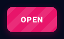
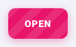
--button-primary-bg-hover, --depth-act-glow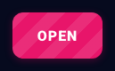
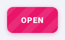
--button-depth-active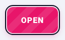
--line-focus, with the hover face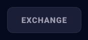
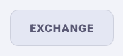
--button-bg-disabled, --text-meta, --line-edge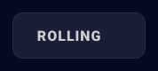
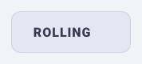
--button-bg-disabled, --text-body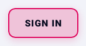
--button-ghost-bg-hover, --button-ghost-depth-hover--button-primary-bg-hover, --bg-act-stripes, --text-on-plate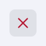
--text-error- The same answer, said once: the ghost, the tile and the close press as the primary does (
--button-depth-activeon ghost and primary; tile and close keep their face). Their focus-visible is the same ring as the primary's,--line-focus, over their hover face. - Disabled lives on the primary only, Exchange on My items (D-239). Everywhere else a button stays live and refuses with its reason (D-58), so no other variant is shot disabled.
node design/kit/tools/shoot-states.js http://localhost:8765/ button # re-shoot after a change to button.css or its tokens node design/kit/tools/shoot-states.js http://localhost:8765/ button --check # step 9: fails if a snapshot drifted
In the code
| Token | Kind | Dark | Light |
|---|
Read live from tokens.css. Geometry (--size-button-*, --radius-button, --space-*), type and the 44px floor come straight from the primitives. Two colours read in this block only, --gradient-button-sheen and --color-price-chip, and the busy sweep wait for step 9.
File: design/system/components/button.css, loaded by design/system/index.css in the atoms' group.
<button class="button button--primary button--l" type="button">Open again</button> <a class="button button--ghost button--m" href="...">Sign in</a> <button class="button button--icon" type="button" aria-label="Search"><i class="icon icon--search" aria-hidden="true"></i></button>
Stands on: Home, the case screen, the catalogue, Deposit, My items, Provably fair, Responsible play, Sign in. Until step 8 those screens still read kit.css; step 6 moves their markup onto this file's forms by the rename map.